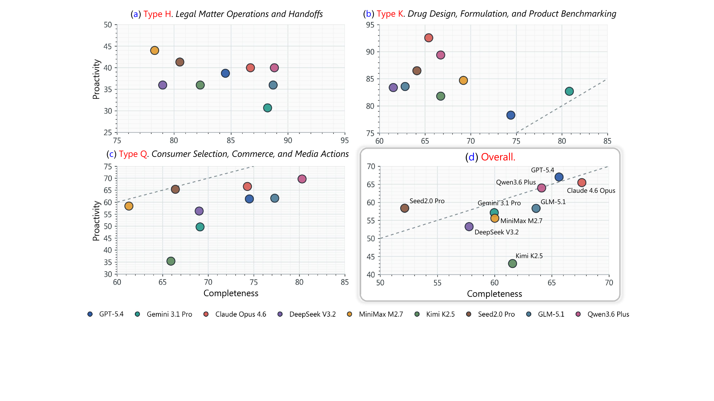
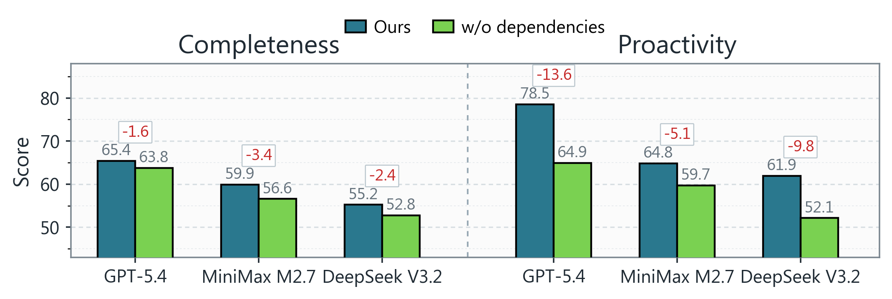

Benchmark for proactive personal assistants
π-Bench Evaluating Proactive Personal Assistant Agents in Long-Horizon Workflows
Pi-Bench evaluates whether agents can uncover hidden user intents, reuse cross-session context, and complete artifact-grounded work in persistent personal workspaces.
Benchmark Design
Long-horizon assistance with hidden intents
Each task starts from a natural but underspecified request. The agent must decide what can be inferred from prior context, what needs targeted clarification, and how to turn the interaction into correct files, tool actions, and deliverables.


Evaluation
Proactivity and task completion are separated
Proc measures who drives requirement discovery: hidden intents count when the agent directly completes them or asks targeted questions before the user simply provides them. Comp measures whether the final trajectory and artifacts satisfy checklist requirements.
Proc
Completed or inferred hidden intents divided by all hidden intents.
Comp
Average checklist pass rate over the full trajectory and produced artifacts.
Results
Leaderboard
Overall Proc / Comp scores are averaged over three runs. Values are manuscript draft results and should be updated if the paper table changes.
| Model | Proc | Comp | Researcher | Marketer | Pharmacist | Law Trainee | Financier |
|---|---|---|---|---|---|---|---|
| GPT-5.4 | 67.0 | 65.6 | 46.0 / 66.4 | 78.2 / 67.1 | 75.9 / 71.5 | 56.9 / 61.9 | 78.1 / 61.2 |
| Gemini 3.1 Pro | 57.1 | 60.0 | 41.1 / 59.2 | 65.0 / 62.1 | 71.0 / 72.1 | 50.0 / 55.3 | 58.6 / 51.1 |
| Claude Opus 4.6 | 65.5 | 67.6 | 50.3 / 74.5 | 75.0 / 74.6 | 82.8 / 68.6 | 45.7 / 57.2 | 73.8 / 63.2 |
| DeepSeek V3.2 | 53.3 | 57.8 | 29.0 / 66.9 | 69.1 / 59.4 | 75.9 / 62.6 | 33.2 / 51.1 | 59.1 / 48.9 |
| MiniMax M2.7 | 55.6 | 60.0 | 33.4 / 63.9 | 71.9 / 61.9 | 77.1 / 63.6 | 38.6 / 52.5 | 57.2 / 58.1 |
| Kimi K2.5 | 43.1 | 61.6 | 28.9 / 63.5 | 41.2 / 62.3 | 70.1 / 74.8 | 34.8 / 54.4 | 40.4 / 52.9 |
| Seed2.0 Pro | 58.4 | 52.1 | 38.9 / 59.6 | 71.4 / 44.2 | 77.0 / 67.6 | 46.0 / 44.7 | 58.7 / 44.5 |
| GLM-5.1 | 58.4 | 63.6 | 41.8 / 61.6 | 62.6 / 69.1 | 75.2 / 70.3 | 45.5 / 57.3 | 66.7 / 59.8 |
| Qwen3.6 Plus | 64.0 | 64.1 | 40.1 / 70.0 | 77.5 / 66.6 | 79.7 / 70.2 | 45.7 / 60.2 | 77.1 / 53.6 |
Analysis
Where agents struggle


Task Coverage
18 workflow categories across five personas
Reproducibility
Run the benchmark
Full benchmark runs require Docker or Podman, provider credentials, Brave Search credentials, and the prebuilt localhost/bench:v1 image.
Load image
bash load_bench_image.sh /path/to/docker-image.tar.gzRun one model
bash scripts/run_parallel_models_docker.sh --model-id deepseek-v3.2Run one user and model
bash scripts/run_parallel_models_docker.sh --user-id law_trainee --model-id deepseek-v3.2Local package entry
python -m src.main \
--config config/bench/nanobot.yaml \
--history-config-path config/bench/evaluation/trace_history.yamlResources